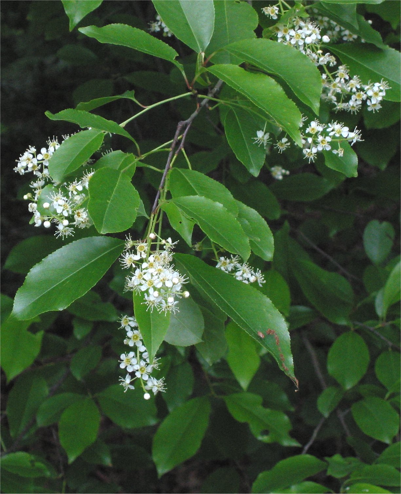

Prunus serotina
| common name | wild cherry | |
| en español | cerezo criollo | |
| name in Āyurveda | padmaka (पद्मक) | |
| plant family | Rosaceae (rose) | |
| parts used | dried inner bark |
 from Wikimedia Commons by Rasbak, CC BY-SA 3.0
{kind=link}
observations/description
dried bark
- small, reddish brown chips of bark
- light, slightly sweet, slightly woody aroma
"Prunus serotina", Wikipedia
- medium-sized, fast-growing forest tree growing to a height of 15–24 meters
- leaves are ovate-lanceolate in shape with finely toothed margins
- fall leaf color is yellow to red
- flowers are small, white and 5-petalled, in racemes that contain several dozen flowers
- flowers give rise to reddish-black 'berries' (actually drupes) fed on by birds
- for about its first decade the bark of a black cherry tree is thin, smooth, and banded, resembling a birch; a mature tree has very broken, dark gray to black bark
- an almond-like odour is released when a young twig is scratched and held close to the nose, revealing minute amounts of cyanide compounds produced and stored by the plant as a defense mechanism against herbivores
distribution/conservation status
"Prunus serotina", Wikipedia | United Plant Savers
- widespread and common in North America and South America
- widely introduced into Western and Central Europe as an ornamental tree in the mid-20th century, where it has become locally naturalized
- has acted as an invasive species there, negatively affecting forest community biodiversity and regeneration
- listed as 'Least Concern' on the IUCN Red List of Threatened Species
- listed as 'In Review' by United Plant Savers
primary actions
The Yoga of Herbs, p. 151-2
- expectorant, antispasmodic, alterative, astringent
The Modern Herbal Dispensatory, p. 320-1
- aromatic, astringent, expectorant
The New Age Herbalist, p. 105
- expectorant
notes from class, 5 May 2025
- antitussive, expectorant, astringent, aromatic, mild nervine, antispasmodic, cardiotonic, anti-inflammatory
system affinities
respiratory
energetics
The Yoga of Herbs, p. 151-2
- reduces pitta, kapha; increases vāta (in excess)
- bitter/astringent taste - sweet post-digestive effect
- cooling
The Modern Herbal Dispensatory, p. 320-1
- cooling, drying
notes from class, 5 May 2025
- cooling, drying
notes from class, 19 May 2025
- bitter, pungent, slightly sweet
- cooling, drying
primary uses
The Yoga of Herbs, p. 151-2
- expectorant action comes from the presence of hydrocyanic acid
- toxic in large amounts
- also present in apricot seeds and bitter almonds, other members of the genus Prunus
- cleanses and decongests the lungs and lymphatics
- wild cherry's cooling property extends this cleansing action to the blood
- indicated for cough, whooping cough, bronchial spasms, palpitations, skin problems, and eye inflammation
The Modern Herbal Dispensatory, p. 320-1
- long history of use in cough remedies
- cooling remedy that expels phlegm and soothes and dries out mucous membranes
- helpful for a variety of respiratory and digestive issues
- may help normalize histamine reactions in allergies
- in TCM, indicated for heart fire blazing: palpitations, mental restlessness, agitation, insomnia, rapid pulse, yellow-coated tongue with a red tip
- specific indications for irregular or intermittent heart action/convulsive action due to overstrain, irritation of stomach with cough, bronchial irritation, impaired appetite, and loss of muscular tone
The New Age Herbalist, p. 105
- important cough remedy
- cyanogenic glycosides are hydrolized to glucose, bensaldehyde, and hydrocyanic acid (aka prussic acid)
- hydrocyanic acid is excreted rapidly, largely via the lungs, where it at first increases respiration and then sedates the sensory nerves which provoke the cough reflex
- toxic in high doses, but not in medicinal doses (0.07-0.16% hydrocyanic acid)
- cyanogenic glycosides and volatile oils present improve the digestion
notes from class, 5 May 2025
- reduces inflammation of the lungs
- improves recovery time, strengthens the heart
- good for deep/low coughs with sore throat and excess mucus
- opens airways, dilates bronchi
- also good for digestive system
- cold infusion recommended
notes from class, 19 May 2025
- good for excited, heated, inflamed tissue states: heat, redness, inflammation
- good after the productive stage of cough into lingering/spasmodic cough
- can improve recovery time, increase appetite, clear excess heat
- astringent on the mucus membranes
- soothes bronchioles, helpful for the lower respiratory system
witchcraft
The Witch's Encyclopedia of Magical Plants, p. 72-3
- associated with viriginity and fertility and seduction
- Danes believed that demons often lived in cherry trees
- Albanians burned cherry branches to banish evil spirits that might prevent the tree from blooming and producing fruit
- various species of Prunus associated with witchcraft and/or protection from witchcraft
- elements: fire, water
- astrological influence: aquarius, aries, libra, taurus, mercury, venus
extra information
"Padmaka", Wisdom Library
- Āyurvedic term padmaka typically refers to Prunus cerasoides, P. puddum, or P. majestica
pharmacology
The New Age Herbalist, p. 105
- cyanogenic glycosides (incl. prunasin), prunase (enzyme), coumarins, volatile oil, tannins, resin
notes from class, 5 May 2025
- volatile oils, cyanogenic glycosides (incl. amygdalin — common in Rosaceae family, has strong effect on gut), tannins, potassium, iron, flavonoids
contraindications/pharmaceutical interactions/warnings
The Yoga of Herbs, p. 151-2
- few precautions, perhaps high vāta conditions
The Modern Herbal Dispensatory, p. 320-1
- slightly toxic, so should not be used in large amounts or for long periods of time
- in high doses, hydrocyanic acid may cause spasms and difficulty breathing
- medicinal doses have never proven harmful
- not recommended for use during pregnancy
The New Age Herbalist, p. 105
- leaves and pits are poisonous
notes from class, 5 May 2025
- do not use the leaves due to the higher concentration of cyanogenic glycosides
notes from class, 19 May 2025
- should not be used in children under 3-4 years
- bark must be fully dried, inner bark used
preparations
The Modern Herbal Dispensatory, p. 320-1
- cold infusion (strong)
- dried bark, 30 g: 1 L
- tincture
- fresh bark, 1:3, 40% alcohol
- wine
- dried bark, 1:5, sherry
- glycerite
- fresh or dried bark, 1:8, 60% glycerin
- cold maceration for 3 weeks, do not use heat
Herbal Materia Medica, p. 31
- cold infusion
- (dried) summer or fall bark, 1:32
- tincture
- (dried) summer or fall bark, 1:5, 60% alcohol, 10% glycerin
The Yoga of Herbs, p. 78, 151-2
- decoction
- dried inner bark, 1:16, reduce to 1/4 original amount
- powder
- cough syrup
dosage
The Modern Herbal Dispensatory, p. 320-1
- cold infusion: 1-5 oz, 3-5/day
- tincture: 10-40 drops, 1-4/day
- wine: 1-2 oz, 3-5/day
- glycerite: 1-2 tsp, 3-5/day
Herbal Materia Medica, p. 31
- cold infusion: 2-6 oz, up to 3/day
- tincture: 30-90 drops, up to 4/day
The Yoga of Herbs, p. 92, 151-2
- decoction: 2 oz, 3/day
- powder: 250-500 mg, 3/day
personal experiences/simples
macerate (9 g: 16 oz, 10+ hours), dried bark
- slightly reddish amber color, quite clear
- intense, sweet aroma of almonds (marzipan) and cherry (syrup)
- surprising bitterness up front, sweet body, similar notes as the aroma but not as pronounced
- more woody undertones in the flavor than in the aroma
- cooling
- astringent, reminiscent of stone fruit pits/the fruit near the stone
recipes
sources
Easely, Thomas and Steven Horne. The Modern Herbal Dispensatory (2016)
Frawley, David and Vasant Lad. The Yoga of Herbs: An Ayurvedic Guide to Herbal Medicine (1986)
Goldberg Blackthorn, Samantha. Ace of Cups Herbal Medicine and Botanical Magic Herbal School (2024)
Kynes, Sandra. The Witch's Encyclopedia of Magical Plants (2024)
Mabey, Richard et al. The New Age Herbalist (1988)
Moore, Michael. Herbal Materia Medica, Fifth Edition (1995)
"Padmaka" on Wisdom Library. Retrieved 9 May 2025.
"Prunus serotina" on Wikipedia. Retrieved 9 May 2025.
"Species At-Risk List" on United Plant Savers. Retrieved 16 August 2025.